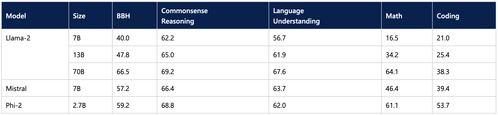

Published: 2024-03-20
Originally published at https://huggingface.co/blog/phi2-intel-meteor-lake
Because of their impressive abilities, large language models (LLMs) require significant computing power, which is seldom available on personal computers. Consequently, we have no choice but to deploy them on powerful bespoke AI servers hosted on-premises or in the cloud.
What if we could run state-of-the-art open-source LLMs on a typical personal computer? Wouldn't we enjoy benefits like:
This all sounds very exciting indeed. So why aren't we doing it already? Returning to our opening statement, your typical reasonably priced laptop doesn't pack enough compute punch to run LLMs with acceptable performance. There is no multi-thousand-core GPU and no lightning-fast High Memory Bandwidth in sight.
A lost cause, then? Of course not.
There's nothing that the human mind can't make smaller, faster, more elegant, and more cost-effective. In recent months, the AI community has worked hard to shrink models without compromising their predictive quality. Three areas are exciting:
Hardware acceleration : modern CPU architectures embed hardware dedicated to accelerating the most common deep learning operators, such as matrix multiplication or convolution, enabling new Generative AI applications on AI PCs and significantly improving their speed and efficiency.
Small Language Models (SLMs) : thanks to innovative architectures and training techniques, these models are on par or even better than larger models. Because they have fewer parameters, inference requires less computing and memory, making them excellent candidates for resource-constrained environments.
Quantization
: Quantization is a process that lowers memory and computing requirements by reducing the bit width of model weights and activations, for example, from 16-bit floating point (
fp16
) to 8-bit integers (
int8
). Reducing the number of bits means that the resulting model requires less memory at inference time, speeding up latency for memory-bound steps like the decoding phase when text is generated. In addition, operations like matrix multiplication can be performed faster thanks to integer arithmetic when quantizing both the weights and activations.
In this post, we'll leverage all of the above. Starting from the Microsoft Phi-2 model, we will apply 4-bit quantization on the model weights, thanks to the Intel OpenVINO integration in our Optimum Intel library. Then, we will run inference on a mid-range laptop powered by an Intel Meteor Lake CPU.
NOTE : If you're interested in applying quantization on both weights and activations, you can find more information in our documentation .
Let's get to work.
Launched in December 2023, Intel Meteor Lake, now renamed to Core Ultra , is a new architecture optimized for high-performance laptops.
The first Intel client processor to use a chiplet architecture, Meteor Lake includes:
A power-efficient CPU with up to 16 cores,
An integrated GPU (iGPU) with up to 8 Xe cores, each featuring 16 Xe Vector Engines (XVE). As the name implies, an XVE can perform vector operations on 256-bit vectors. It also implements the DP4a instruction, which computes a dot product between two vectors of 4-byte values, stores the result in a 32-bit integer, and adds it to a third 32-bit integer.
A Neural Processing Unit (NPU) , a first for Intel architectures. The NPU is a dedicated AI engine built for efficient client AI. It is optimized to handle demanding AI computations efficiently, freeing up the main CPU and graphics for other tasks. Compared to using the CPU or the iGPU for AI tasks, the NPU is designed to be more power-efficient.
To run the demo below, we selected a mid-range laptop powered by a Core Ultra 7 155H CPU . Now, let's pick a lovely small language model to run on this laptop.
NOTE : To run this code on Linux, install your GPU driver by following these instructions .
Released in December 2023, Phi-2 is a 2.7-billion parameter model trained for text generation.
On reported benchmarks, unfazed by its smaller size, Phi-2 outperforms some of the best 7-billion and 13-billion LLMs and even stays within striking distance of the much larger Llama-2 70B model.
This makes it an exciting candidate for laptop inference. Curious readers may also want to experiment with the 1.1-billion TinyLlama model.
Now, let's see how we can shrink the model to make it smaller and faster.
Intel OpenVINO is an open-source toolkit for optimizing AI inference on many Intel hardware platforms ( Github , documentation ), notably through model quantization.
Partnering with Intel, we have integrated OpenVINO in Optimum Intel, our open-source library dedicated to accelerating Hugging Face models on Intel platforms ( Github , documentation ).
First make sure you have the latest version of
optimum-intel
with all the necessary libraries installed:
pip install --upgrade-strategy eager optimum[openvino,nncf]
This integration makes quantizing Phi-2 to 4-bit straightforward. We define a quantization configuration, set the optimization parameters, and load the model from the hub. Once it has been quantized and optimized, we store it locally.
from transformers import AutoTokenizer, pipeline
from optimum.intel import OVModelForCausalLM, OVWeightQuantizationConfig
model_id = "microsoft/phi-2"
device = "gpu"
q_config = OVWeightQuantizationConfig(bits=4, group_size=128, ratio=0.8)
ov_config = {"PERFORMANCE_HINT": "LATENCY", "CACHE_DIR": "model_cache", "INFERENCE_PRECISION_HINT": "f32"}
tokenizer = AutoTokenizer.from_pretrained(model_id)
model = OVModelForCausalLM.from_pretrained(
model_id,
export=True,
quantization_config=q_config,
device=device,
ov_config=ov_config,
)
model.compile()
pipe = pipeline("text-generation", model=model, tokenizer=tokenizer)
results = pipe("He's a dreadful magician and")
save_directory = "phi-2-openvino"
model.save_pretrained(save_directory)
tokenizer.save_pretrained(save_directory)
The
ratio
parameter controls the fraction of weights we'll quantize to 4-bit (here, 80%) and the rest to 8-bit. The
group_size
parameter defines the size of the weight quantization groups (here, 128), each group having its scaling factor. Decreasing these two values usually improves accuracy at the expense of model size and inference latency.
You can find more information on weight quantization in our documentation .
NOTE : the entire notebook with text generation examples is available on Github .
So, how fast is the quantized model on our laptop? Watch the following videos to see for yourself. Remember to select the 1080p resolution for maximum sharpness.
The first video asks our model a high-school physics question: " Lily has a rubber ball that she drops from the top of a wall. The wall is 2 meters tall. How long will it take for the ball to reach the ground? "
The second video asks our model a coding question: " Write a class which implements a fully connected layer with forward and backward functions using numpy. Use markdown markers for code. "
As you can see in both examples, the generated answer is very high quality. The quantization process hasn't degraded the high quality of Phi-2, and the generation speed is adequate. I would be happy to work locally with this model daily.
Thanks to Hugging Face and Intel, you can now run LLMs on your laptop, enjoying the many benefits of local inference, like privacy, low latency, and low cost. We hope to see more quality models optimized for the Meteor Lake platform and its successor, Lunar Lake. The Optimum Intel library makes it very easy to quantize models for Intel platforms, so why not give it a try and share your excellent models on the Hugging Face Hub? We can always use more!
Here are some resources to help you get started:
If you have questions or feedback, we'd love to answer them on the Hugging Face forum .
Thanks for reading!
Julien Simon is the Chief Evangelist at Hugging Face , where he focuses on democratizing AI and making transformers accessible to everyone. A leading voice in open-source AI and small language models, he helps developers and enterprises bring their AI ideas to life. In his spare time, he reads the works of JRR Tolkien again and again.